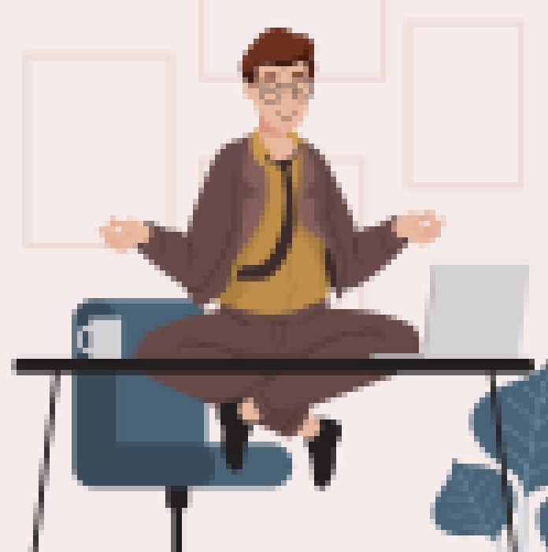

Фритрек и нулевой спринт: Подготовка к работе
</HTML>

Это было самое начало пути. На этом этапе важно было проникнуться
основами и настроиться на учёбу. И, возможно, подумать, как новые
знания могут повлиять на ваше будущее.
Когда я начинал курс, то думал "ох, сейчас как возьму и актуализирую свои знания в этой сфере, ведь мне нужно совсем немного, чтобы догнать". Как же я ошибался...
1 спринт: Я — чистый лист
</HTML>
На первых этапах мы работали со страхами и сомнениями, которые часто
испытывают новички. Один из них — страх перед чистым листом. Это,
конечно же, намного сложнее, чем боязнь куска бумаги. Часто за этим
ощущением скрываются более глубокие вопросы: с чего начать? а вдруг
будет слишком сложно? что, если я не справлюсь?
У меня не было волнений, что не справлюсь, т.к. версткой до этого я
уже занимался и мне казалось, что я просто немного отстал и данный
курс мне поможет догнать. Но стоило мне только погрузиться в тему
гридов и флексов, как я понял: как же сильно я отстал и какой
большой рывок сделала данная сфера и как далеко ушла от моих знаний
и навыков.
3 спринт: Обходные стратегии
</HTML>
На первых этапах мы работали со страхами и сомнениями, которые часто
испытывают новички. Один из них — страх перед чистым листом. Это,
конечно же, намного сложнее, чем боязнь куска бумаги. Часто за этим
ощущением скрываются более глубокие вопросы: с чего начать? а вдруг
будет слишком сложно? что, если я не справлюсь?
Третий спринт, точнее материалы третьего спринта поразили изобилием
решений для адаптивных сайтов. И, что самое главное, адаптивных
сайтов без медиазапросов! Я продолжал испытывать шок от учебы. И это
был первый раз, когда я не уложился в дедлайн. Причина - не самая
легкая проектная работа, плюс небольшой семейный отпуск.
2 спринт: Погоня за идеалом
</HTML>
На первых этапах мы работали со страхами и сомнениями, которые часто
испытывают новички. Один из них — страх перед чистым листом. Это,
конечно же, намного сложнее, чем боязнь куска бумаги. Часто за этим
ощущением скрываются более глубокие вопросы: с чего начать? а вдруг
будет слишком сложно? что, если я не справлюсь?
Тут прям начал испытывать кайф от получаемых знаний. Если на первом
спринте я шокировался от того, как много я отстал, то теперь я это
принял и начала наслаждаться новыми знаниями.
2 спринт: О тех, кто рядом
</HTML>
На первых этапах мы работали со страхами и сомнениями, которые часто
испытывают новички. Один из них — страх перед чистым листом. Это,
конечно же, намного сложнее, чем боязнь куска бумаги. Часто за этим
ощущением скрываются более глубокие вопросы: с чего начать? а вдруг
будет слишком сложно? что, если я не справлюсь?
Этот спринт принес самое большое удовлетворение, т.к. дался проще
всех. И проектная работа тоже была сделана быстро и без проблем. Мне
казалось - ну все, меня не остановить. Правда следующий спринт
немного охладил пыл...
1 спринт: А если не получится?
</HTML>
На первых этапах мы работали со страхами и сомнениями, которые часто
испытывают новички. Один из них — страх перед чистым листом. Это,
конечно же, намного сложнее, чем боязнь куска бумаги. Часто за этим
ощущением скрываются более глубокие вопросы: с чего начать? а вдруг
будет слишком сложно? что, если я не справлюсь?
Когда проектную работу не приняли первый раз - я знал, что это
нормально. Когда не приняли второй раз - немного задумался. После
третьего уже напрягся! ))
3 спринт: Когда опускаются руки
</HTML>

На первых этапах мы работали со страхами и сомнениями, которые часто
испытывают новички. Один из них — страх перед чистым листом. Это,
конечно же, намного сложнее, чем боязнь куска бумаги. Часто за этим
ощущением скрываются более глубокие вопросы: с чего начать? а вдруг
будет слишком сложно? что, если я не справлюсь?
На этом спринте я был максимум "расконцентрирован", т.к. был в
отпуске и работу делал "на бегу". Было сложно. И радостно, когда
работу приняли.
«Сейчас я здесь»
</HTML>
На первых этапах мы работали со страхами и сомнениями, которые часто
испытывают новички. Один из них — страх перед чистым листом. Это,
конечно же, намного сложнее, чем боязнь куска бумаги. Часто за этим
ощущением скрываются более глубокие вопросы: с чего начать? а вдруг
будет слишком сложно? что, если я не справлюсь?
Этот абзац я пишу в тот момент, когда меня одолевают и беспокоят мысли о
предстоящей верстке этого ... сердечка и его анимаций. Судя по тредам в пачке,
люди помучались с этим сердечком. Ну и еще завершается модуль верстки и есть понимание, что многие вещи нужно
перечитать. Ну и волнение от предстоящего JS.